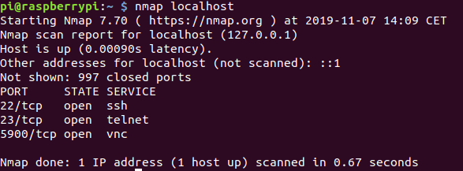
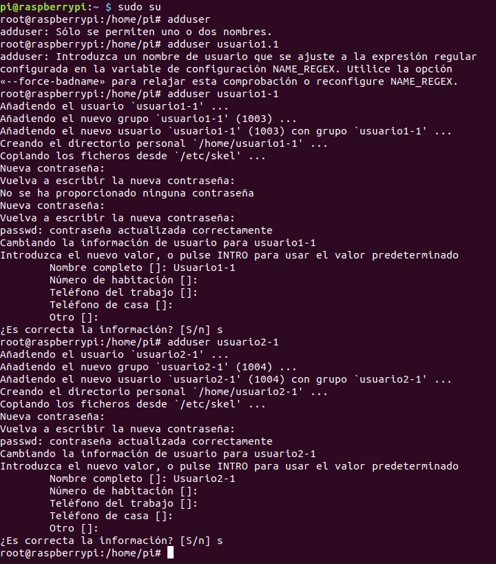
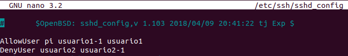
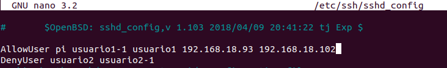
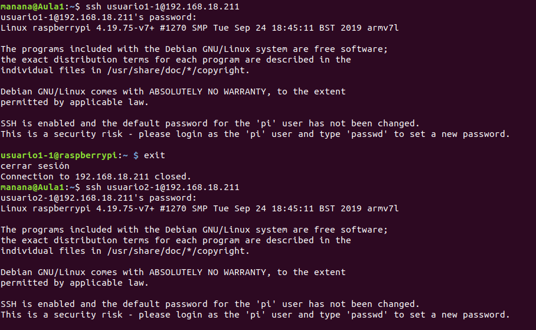
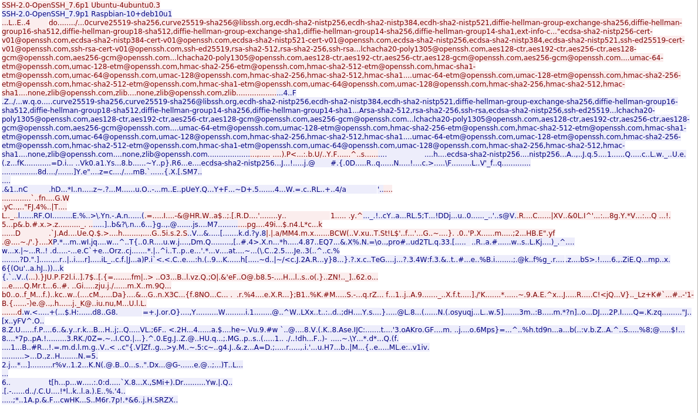

Ejercicios mediante SSH
Primer paso, instalar SSH o como en nuestro caso, habilitarlo desde la Raspberry con "raspi config". después de eso, comprobaremos si está todo bien y mirar si el puerto en escucha es el que deseamos con "nmap localhost".
Seguidamente, nos meteremos por SSH en nuestra Raspberry con "ssh pi@ipderasperry" ej: ssh pi@192.168.18.211 después nos meteremos en el root con "sudo su" y crearemos los usuarios deseados con "adduser" y rellenaremos el nombre contraseña y todo lo que nos indique.
A continuación editaremos con "nano /etc/ssh/sshd_config" añadiremos AllowUser y el nombre de los usuarios que queremos que se puedan acceder mediante ssh, y con DenyUser los que no queremos que sean accesibles. (En nuestro caso, creamos 4 usuarios, 2 yo, y 2 mi compañero.)
Ahora, para que solo podamos acceder desde un equipo en concreto, debemos añadir con un espacio las IP´s de los equipos que queremos que puedan acceder a nuestra Raspberry.
Ahora soño queda probar que podamos acceder a estos usuarios con SSH, con "ssh nombredeusuario@ipderasperry".
Ahora abrimos WireShark y nos conectamos de nuevo a nuestra Raspberry para que salga tráfico, buscamos el paquete que más tamaño tenga, y miramos si la contraseña y el login van encriptados como se muestra aquí.
